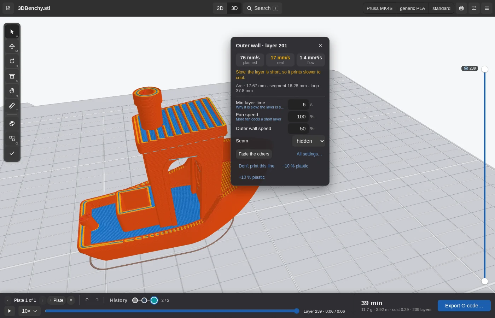
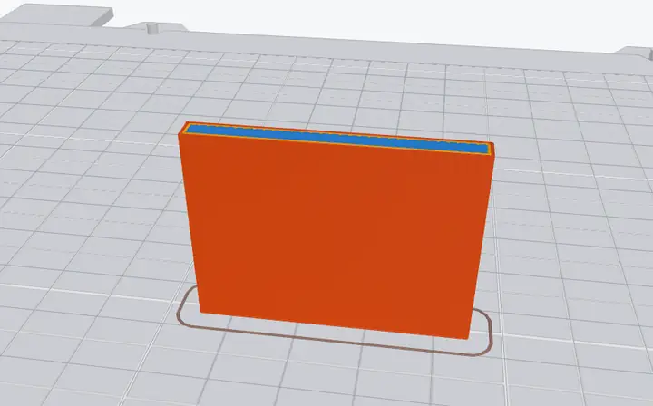
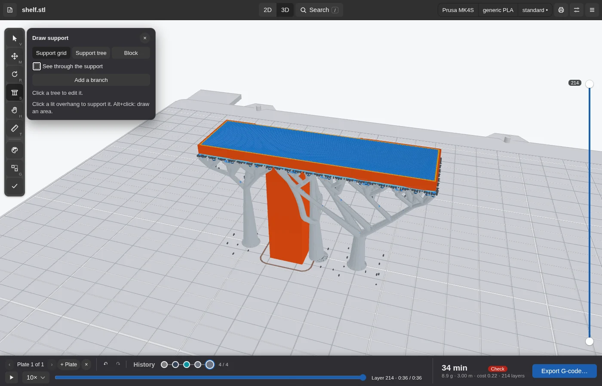
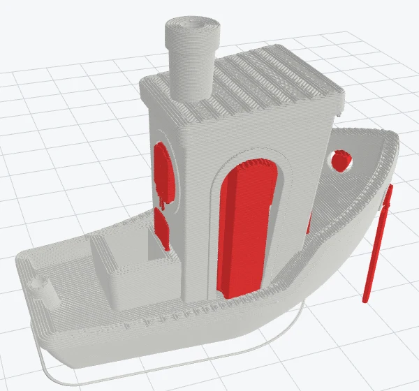

Documentation
zslice
zslice is a slicer for FDM 3D printers, written from scratch in Zig. It shows the print as the plastic forms it, before you print. It runs in your browser: open zslice.beetlebug.org. No install is necessary, and your files stay on your computer.
Open the app Your first print The best features Embed the library Source on GitHub

zslice is an experimental slicer. It has three goals:
- Very fast slicing: a change of a setting shows in the view at once, at 60 frames a second.
- New ways to use a slicer: trials of new UI and UX models, for example the slice as the whole UI, a click on a line to see why it prints as it does, and direct edits in the 3D view.
- Feature ideas: for example a physical simulation of the plastic, so that the real sag of the filament shows before you print, fitted to measured test prints.
Expect changes and rough edges. Check each print in the view before you send it to a printer.
The best of it
Speed

The view runs at 60 frames a second, and a slice keeps up with your edits. On a 3DBenchy (8 cores):
- A full slice: about 0.3 s.
- A change of a speed, the fan, a temperature, or the flow: about 15 ms. The paths stay; only the G-code is made again.
- A change of the infill: about 30 ms. A change of the walls: about 0.2 s.
- A drag of a part, a tree branch, or a setting slider shows the result as you move.
zslice keeps the work of the last slice, and makes again only what a change touches. A new change stops a slice that runs in under 15 ms.
The print as it forms

zslice simulates the plastic as it leaves the nozzle. It cools with the fan, and it sags or falls where no plastic holds it. A bridge sags. A slab over the air falls in strands, and the next layers print on them. The physics is fitted to measured test prints, and it runs after each slice.
Parts with real physics

A part that cannot stand falls over onto a face, as on a real bed. A brim holds a tall part up. With the Grab tool, pick a part up and move it. Let go, and it rests flat.
A support editor

Click an overhang to put support under it. Drag the dots of tree support to move the branches. Change a support from grid to tree or a pad with one click. zslice keeps each branch within the rules.
Colors and two nozzles

Give a part, some layers, or a painted face a filament of its own. Print the support in its own filament, so it breaks away. Take the filaments that a printer has loaded with one click. On a printer with two nozzles, such as the Bambu Lab X2D, each filament has its nozzle. See Print in colors.
All features: The best features.
The guide
Start
- In your browser: open zslice.beetlebug.org, and read Your first print.
- On your computer: see Install.
- From the source: zslice needs Zig 0.16.
zig build test # run the tests
zig build -Doptimize=ReleaseFast # the command line tool: zig-out/bin/zslice
zig build web # the web app: zig-out/web/app
zslice slice part.stl -o part.gcode # slice a partThe Linux app (GTK 4) and the macOS app (SwiftUI and Metal) are in linux/ and macos/. See Web, Linux, and Mac.
Install
Homebrew (macOS and Linux)
Add the tap one time:
brew tap beetlebugorg/tapThen install the parts that you want:
brew install --cask zslice # the Mac app
brew install zslice # the command line tool (macOS and Linux)
brew install zslice-gtk # the Linux app (GTK 4)brew upgrade gets each new release.
Downloads
The releases page has the files of each release:
- The Mac app:
zslice-VERSION-macos-universal.dmg, for Apple silicon and Intel. Open the dmg, and drag zslice to Applications. - The Linux app:
zslice-gtk-VERSION-linux-x86_64.tar.gz(oraarch64). It needs GTK 4.14 or later. Extract it, and runbin/zslice-gtk. - The command line tool:
zslice-VERSION-<cpu>-linux-musl.tar.gzandzslice-VERSION-<cpu>-macos.tar.gz. - The web app:
zslice-VERSION-web.zip, to serve from your own web server. The app slices with threads only when the server sends the headersCross-Origin-Opener-Policy: same-originandCross-Origin-Embedder-Policy: require-corp. SHA256SUMShas the SHA-256 of each file.
Links
- The documentation: the guide, the settings, and the internals.
- Embedding: the library from Zig, C, and JavaScript.
- How a slicer works, Architecture, and Contributing.
- The roadmap, and Privacy: no analytics, no cookies.
License
AGPL-3.0-or-later. See LICENSE. The sources that zslice uses, and the licenses of the code in its binaries, are in the references.
The pictures show a slice of 3DBenchy by Creative Tools, licensed under CC BY-ND 4.0. The model is not in this repository.